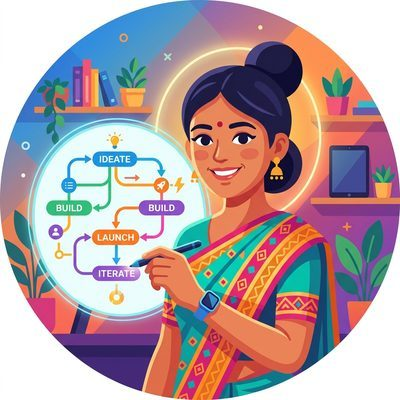
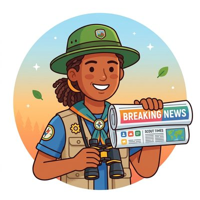
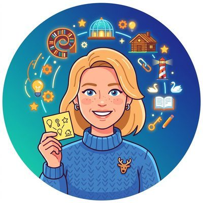
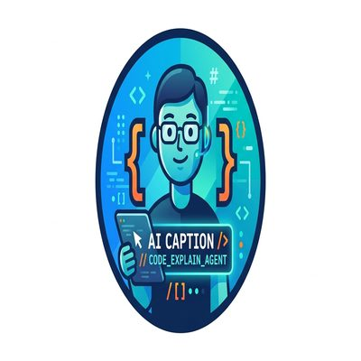

#00
Chapter Lead
Own the chapter end to end and coordinate every other agent toward a coherent, complete result.
The company of AI agents that writes the Hands-On AI Science books, under heavy human supervision. Each agent owns one narrow job in the chapter-production pipeline, from deep explanations and code pedagogy to fact integrity, pacing, and final publication checks, so the books stay complete, accurate, and enjoyable to read.
More than forty specialized agents, each with a single job in the writing pipeline.
Own the chapter end to end and coordinate every other agent toward a coherent, complete result.
Check that the chapter matches the course's learning objectives and prerequisites.
Build the deep, from-first-principles explanations of each core concept.
Order the ideas so each one builds on the last and actually teaches.
Represent the capable but non-expert student meeting the material for the first time.
Control density and pacing so students absorb the material without overload.
Design concrete examples, analogies, and recurring motifs that make abstract ideas memorable.
Create practice opportunities that directly reinforce the concepts in the chapter.
Write correct, focused code examples wherever code teaches better than prose.

Produce the figures that aid understanding, as SVG, generated images, or plotting code.
Predict the misunderstandings students are likely to form and head them off.
Scrutinize every claim for truth and technical reliability.
Keep language, symbols, and naming consistent across the chapter and the book.
Build the internal links that turn the book into a connected learning system.
Make the chapter read as one coherent story rather than a stack of sections.
Maintain a single consistent voice and reading experience throughout.
Keep the chapter lively and memorable without losing its seriousness.
Review the chapter like a seasoned editor from a top technical publishing house.
Surface deeper scientific insights, open questions, and links to the research frontier.
Propose a stronger structural organization at the chapter and section level.

Watch the field so the book covers current topics and misses no major development.
Ensure each chapter is understandable from the book's own background material.
Design titles, openings, and framing that make a chapter feel important and worth reading.
Turn chapter material into project ideas and 'you could build this' moments.
Find the one example or contrast that makes a concept suddenly click.
Give the book a distinctive, recognizable look through recurring visual patterns.
Propose interactive demos and small simulations that make ideas tangible.

Add mnemonics, recurring patterns, and memorable phrasing so the material sticks.
Challenge whether the chapter is genuinely impressive, distinctive, and non-generic.
Rewrite dense passages into simpler, more direct language without losing correctness.
Break long explanations into smaller units and fix places where attention drops.
Create humorous, pedagogically useful illustrations and embed them in the chapter.
Craft a witty opening quote that makes readers smile and read on.
Add short 'Practical Example' boxes that ground concepts in real industry stories.
Inject well-placed humor and playful analogies to make reading genuinely enjoyable.

Compile a comprehensive, hyperlinked bibliography of the sources behind the material.
Audit the whole book and flag where other agents missed or underperformed.

Orchestrate the quality-assurance pipeline that runs a chapter to completion.
Guard the final gate, checking a chapter before it goes live.
Verify every figure, diagram, and code output is correct, captioned, and referenced.

Ensure every code block has a caption, opening comments, and a prose lead-in.

Design structured, guided hands-on labs at the end of each section.
Find content repeated across chapters and sharpen each into a distinct treatment.